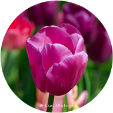

<!DOCTYPE html>
<html lang="en">
<head>
    <meta charset="UTF-8">
    <title>drawer_side_menu</title>
    <style>
        /* reset */
        * {
            font-family: "Helvetica Neue", "Arial", "Hiragino Kaku Gothic ProN", "Meiryo", sans-serif; font-size: 16px; line-height: 1.5;
        }
        img {vertical-align: middle;}
        button {outline: none;}
        
        /* custom */
        body {height: 100vh; width: 100%; background: skyblue;}
        .menu {position: relative;}
        .menu aside {background-color: rgba(0,0,0,0.8); width: 350px; height: 100%; top: 0; left: -350px; position: fixed;}
        .menu aside ul {margin: 0; padding: 0; top: 50px; left: 114px; position: absolute;}
        .menu aside li {margin: 0 0 20px; list-style: none;}
        .menu aside button {background-color: rgba(0,0,0,0.8); display: block; position: absolute; top: 150px; left: 350px; width: 52px; height: 132px; margin: 0; padding: 0; border: none; cursor: pointer;}
    </style>
</head>
<body>
    <div class="menu">
        <aside>
            <ul>
                <li><a href="#"></a></li>
                <li><a href="#"></a></li>
                <li><a href="#"></a></li>
            </ul>
            <button></button>
        </aside>
    </div>
    
    <script src="jquery/jquery-1.10.2.min.js"></script>
    <script src="jquery/jquery-ui-1.10.3.custom.min.js"></script>
    <script>
        var $aside = $('aside'),
            $button = $aside.find('button'),
            $duration = 300;
        
        //버튼 클릭하면 aside가 나오도록
        $button.click(function(){
            //$aside.stop().animate({left: '0px'}, $duration);
            
            //js: 선택자.classList.add='open';
            //jquery : 선택자.addClass('open');
            //$aside.addClass('open');
            
            $aside.toggleClass('open');
            //a.hasClass('b') : 조건문에서만 사용. a요소에 b라는 클래스가 있으면 true, 없으면 false
            if($aside.hasClass('open')){
                $aside.stop().animate({left: '-70px'}, $duration, 'easeOutBack');
                $button.find('img').attr('src','img/btn_close.png');
            }else{
                $aside.stop().animate({left: '-350px'}, $duration, 'easeOutBack');
                $button.find('img').attr('src','img/btn_open.png');
            }
        });
    </script>
</body>
</html>